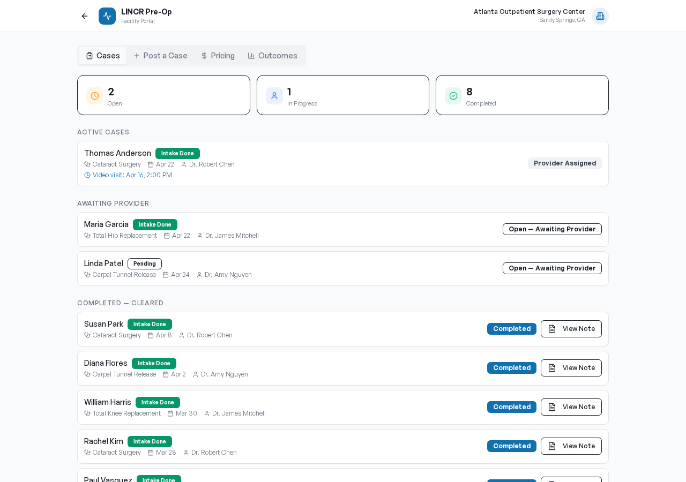

For the surgery center
Never cancel a case for missing clearance again.
Post a case in under a minute. The patient gets a text to complete their intake from their couch. An anesthesiologist claims the case, conducts the pre-op visit by video, and signs the clearance note. You get a signed PDF ready for the chart — before the patient ever arrives.
Outcome: Every patient walks in cleared. Zero same-day cancellations from missed pre-ops.
See the facility experience
→
